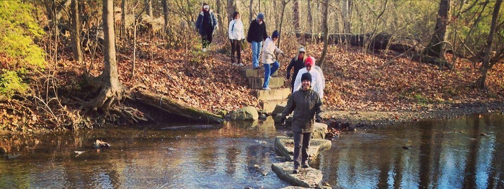
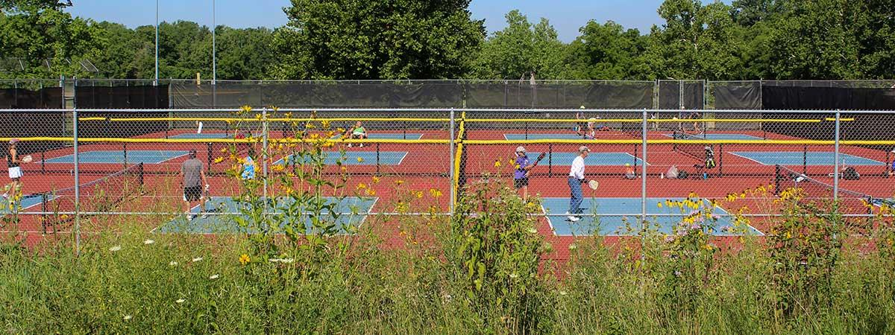

Explore your community's BIG backyard
51 parks and 1,063 acres across Centerville and Washington Township. There is one within walking distance of every home.
This week in the parks
All programs and eventsComing up
Monthly park news in your inbox
Programs, events and park updates, once a month.
Park finder
Open the park finderWhat do you want to do today?
News
All newsLatest from the parks
Foundation for Centerville-Washington Parks
Help add shade and seating to the pickleball courts
The Foundation is raising $50,000 for permanent shade, seating and rebounder enhancements at the new Activity Center Park courts.
Visit the Foundation